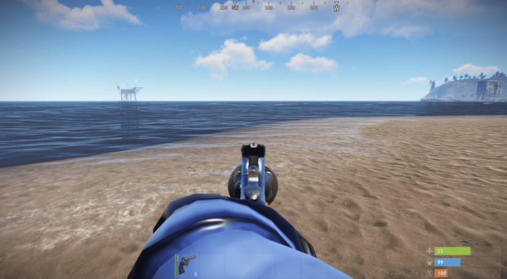
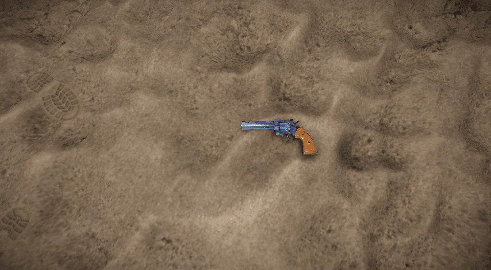
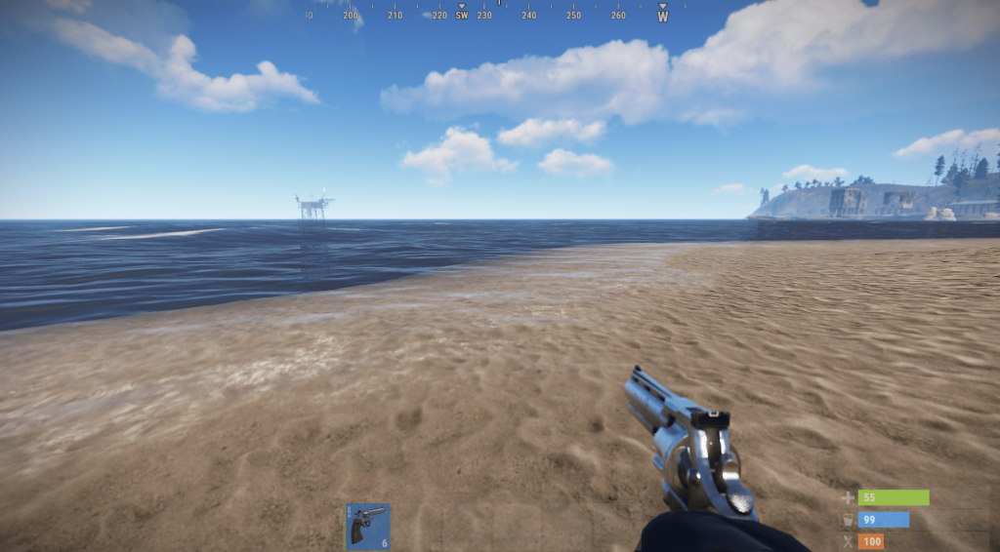
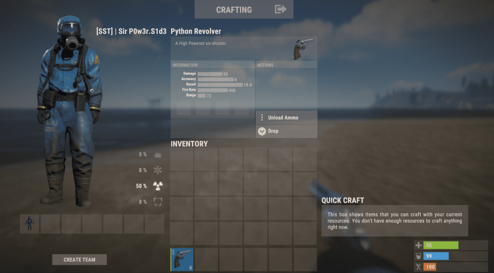

M249 в игре Rust
Создатель Rob Smith
Posted on May 15, 2023 at 12:00 PM
Оружие – неотъемлемая часть любого шутера. Оружие чаще всего разделяют на классы – пистолеты, пистолеты-пулемёты, штурмовые винтовки, снайперские винтовки и т.д. Игра Rust имеет около 20 оружий категории «Огнестрельные». Оружие можно подобрать по вкусу и цвету, ведь каждый класс оружия имеет как минимум 2 разновидности. Самый редко используемый класс оружия – револьверы, коих в игре 2. Но разбирать мы будем самый мощный из них – револьвер «Питон».
Python в Rust Револьвер «Питон» — мощный револьвер на 6 патронов, который способен с нескольких выстрелов убивать слабозащищённых игроков. Питон в руках в Rust Питон в руках Урон в 55 единиц делает револьвер «Питон» самым мощным револьвером, а также наимощнейшим пистолетом в игре. Добавь к нему скорострельность в 400 выстрелов в минуту и получишь убойную смесь. При использовании огненных патронов, исходящий урон так и вообще вырастает на 6 единиц, то есть теперь вы нанесёте не 55 единиц урона, а все 61.
Вместимость «Питона» — 6 пистолетных патронов любого вида. Перезарядка занимает практически 4 секунды. Со стандартного прицела стрелять конечно можно, но всё же я настоятельно рекомендую установить на револьвер «Питон» хотя бы какие-нибудь модификаторы. Благо он совместим абсолютно со всеми подствольниками и прицелами. Хотя надульники установить не получится, ну и к чёрту их, это же револьвер!
Создание револьвера Python Револьвер «Питон» может создать любой игрок, у которого изучен чертёж и есть все необходимые ресурсы и предметы. Поиски и изучение Найти револьвер «Питон» можно в 5 контейнерах: Заблокированный ящик – 3%; Элитный ящик – 1%; Военный ящик – 1%; Бронированный учёный – 0.1%; Учёный с нефтяной вышки – 0.1%. *В элитных и военных ящиках «Питон» выпадает практически непригодным для стрельбы. Его состояние всего 10%, в то время как из остальных контейнеров он выпадает максимально исправным. Изучение револьвера «Питон» обойдётся вам в 125 единиц металлолома на специальном столе для изучений.
Крафт и ремонт Крафт требует от нас 1 предмет и 3 ресурса. Нам понадобится верстак второго или третьего уровня. При крафте с использованием верстака второго уровня время крафта составляет 1 минуту. Верстак третьего уровня ускоряет процесс в 2 раза – 30 секунд. Ресурсы используются следующие: Металлическая труба – 3 штуки; Металлическая пружина – 1 штука; Металл высокого качества – 10 единиц. Ремонт стоит дешевле – всего 4 единицы металла высокого качества, и то это максимальная стоимость восстановления. При ремонте теряется 20% от максимальной прочности.
